2021년 4월 29일 목요일
VSCode
VSCode - Remote SSH 연동
Visual Studio Code(이하 VSCode)는 다양한 플러그인을 활용할 수 있는 강력한 텍스트 에디터입니다. Mobaxterm을 대체하여 VSCode를 인의예지 서버와 연동하여 다양한 기능을 활용할 수 있습니다.
설치 방법
-
VSCode가 설치되지 않은 경우, 여기를 클릭하여 VSCode를 설치합니다.
-
VSCode를 켜고 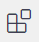 아이콘을 클릭합니다.
-
새로 열린 창에서
Remote - SSH를 검색하고 나오는 플러그인을 설치합니다.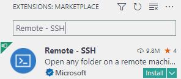
-
왼쪽 상단 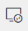 아이콘을 클릭합니다.
-
위의 Remote Explorer가 SSH Target인지 확인합니다.
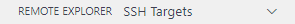
-
SSH TARGETS 옆에 있는 + 버튼을 클릭합니다.
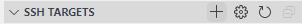
-
중앙 상단에 SSH Connection Command를 입력하라는 창이 뜹니다. CLI에서 SSH 접속하듯이 입력해줍시다.
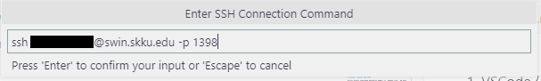
-
연결 정보를 저장할 파일을 고르라는 창이 뜹니다. 잘 모르겠으면 맨 위를 선택합니다.
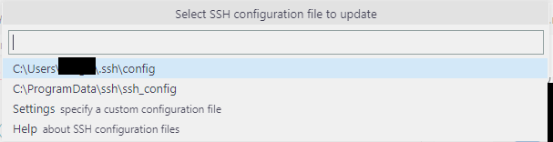
-
왼쪽에 새로 추가된 모습을 볼 수 있습니다.
-
이제 연결해봅시다. 방금 추가한 설정을 우클릭하고 ‘Connection to New Window’를 클릭합니다.
-
먼저 접속하는 서버의 OS를 물어봅니다. Linux를 선택해줍시다.
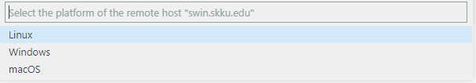
-
처음 접속하는 경우 known_host에 등록할지를 물어보는 경고가 뜹니다. Continue를 선택해줍시다.
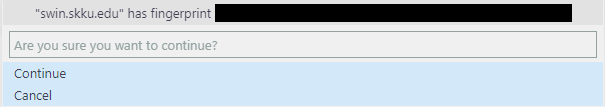
-
이제 비밀번호를 입력해야 합니다. 자기 계정의 비밀번호를 입력합시다.
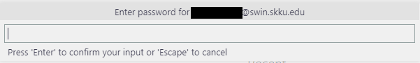
-
인고의설치시간이 지나면 준비가 완료됩니다!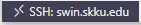